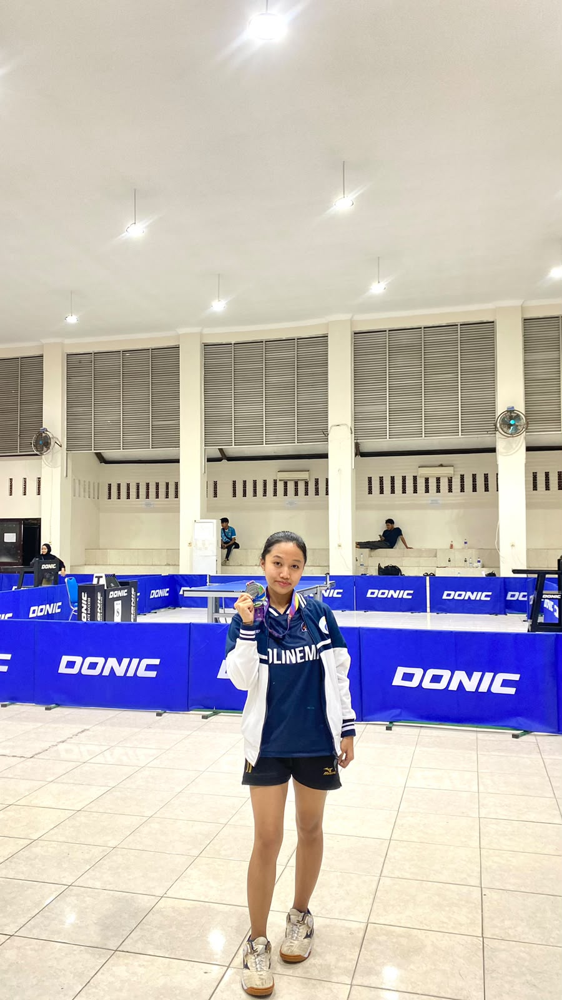
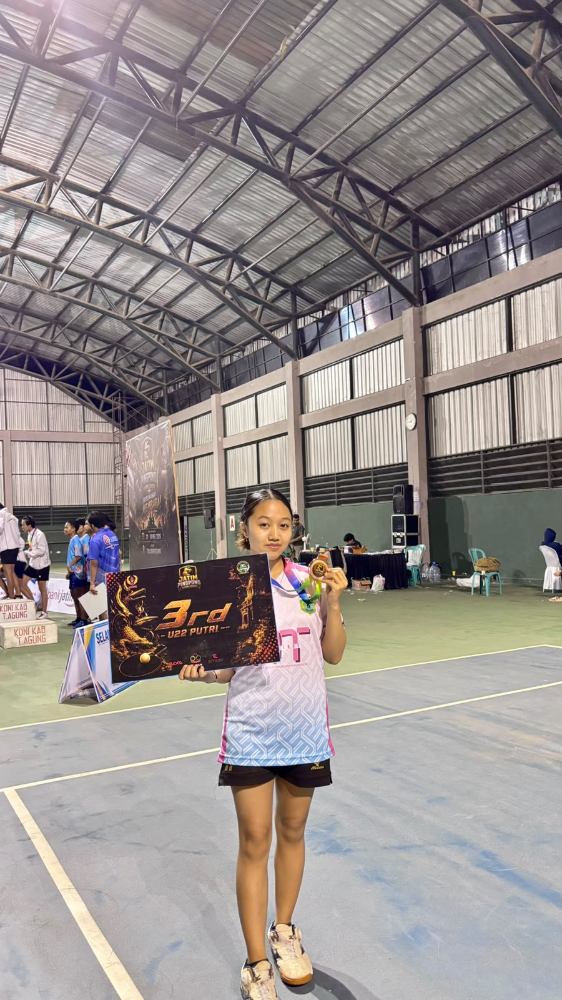
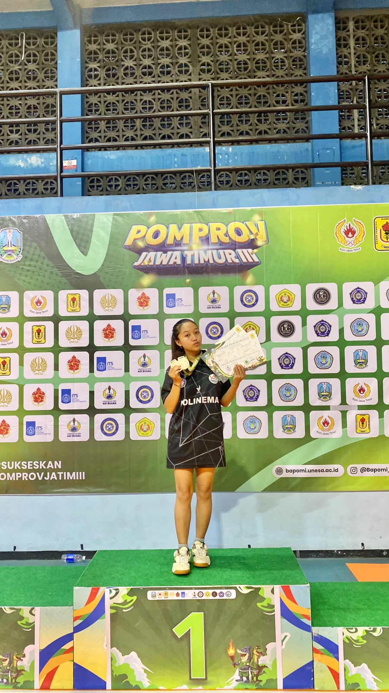
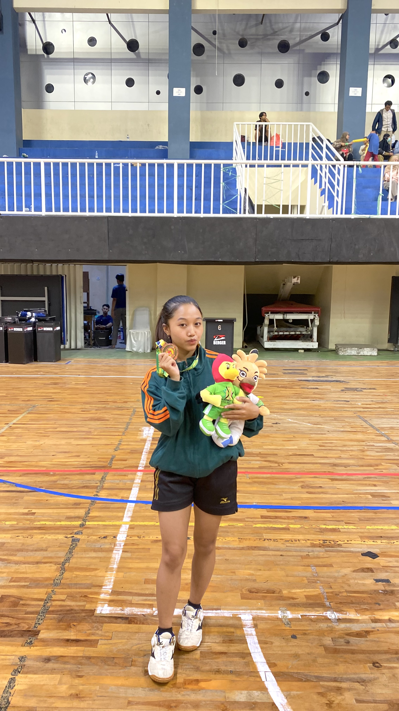
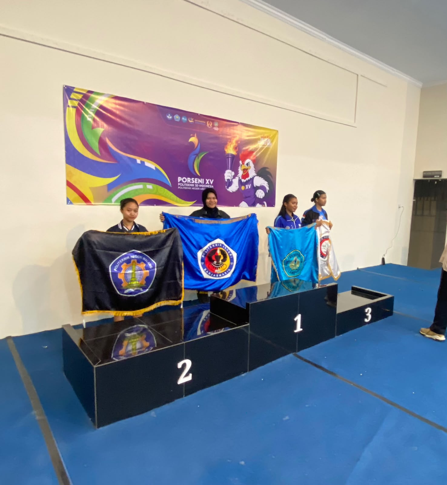
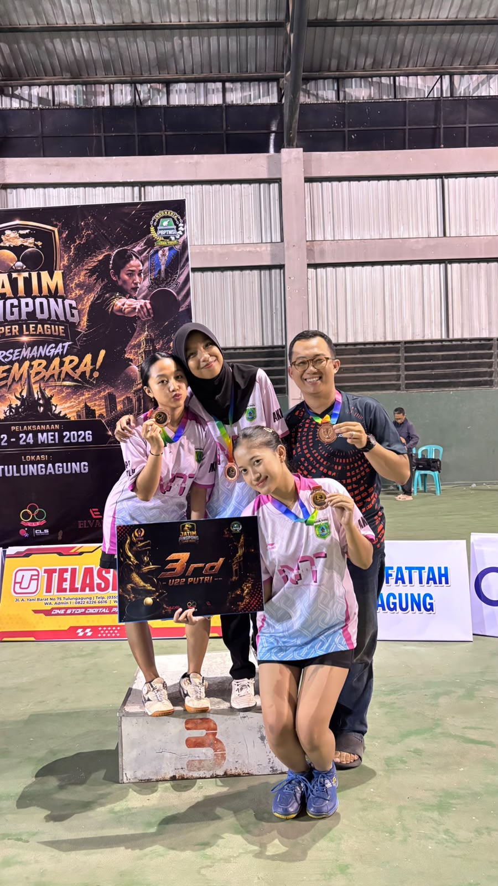
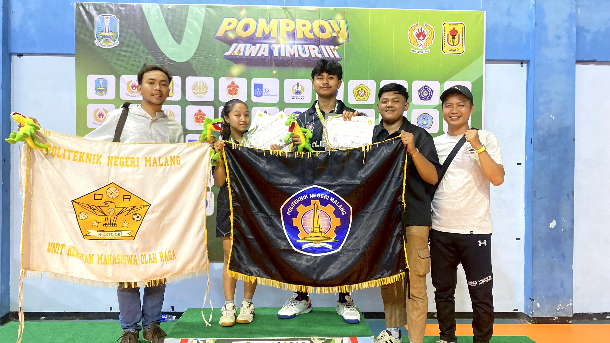
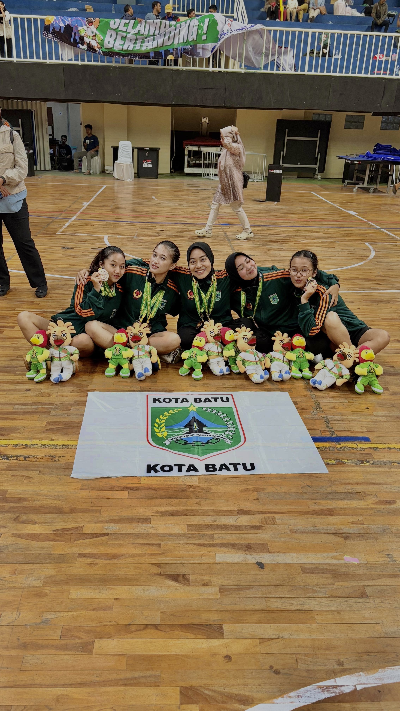

Pencapaian Terbaik
Prestasi Olahraga
Rekam jejak kejuaraan cabang olahraga Tenis Meja.
2nd
Tunggal Putri Tenis Meja Porseni Politeknik Se-Indonesia 2026
Juara 2Politeknik Negeri Medan
3rd
Tunggal Putri Tenis Meja Pomprov Jatim 2025
Juara 3Universitas Negeri Surabaya
3rd
Ganda Campuran Tenis Meja Pomprov Jatim 2025
Juara 3Universitas Negeri Surabaya
3rd
Beregu Liga Jatim I 2026
Juara 3Tulungagung
3rd
Beregu Putri Porprov Jawa Timur 2025
Juara 3Kota Batu
Galeri Foto Kejuaraan
Dokumentasi kegiatan dan momen kompetisi resmi. (Klik foto untuk memperbesar)







